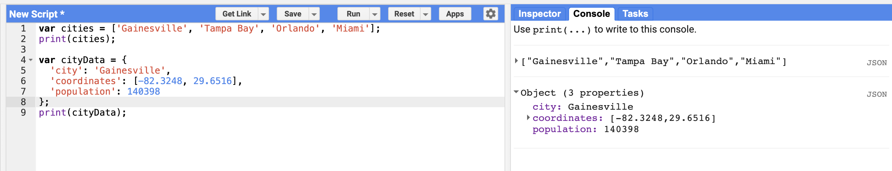

JavaScript Objects
Introduction to Objects
Lists allow you to store multiple values in a single container variable. While useful, lists are not ideal for storing structured data. It is helpful to be able to refer to each item with its name rather than its position.
Objects in JavaScript allow you to store key-value pairs, where each value can be referred to by its key. You can create an object using the curly braces { }.
Creating an Object
The code below creates an object called cityData with some information about Gainesville:
var cityData = {
'city': 'Gainesville',
'coordinates': [-82.3248, 29.6516],
'population': 140398
};
print(cityData);Important Syntax Notes
Multi-line Formatting
We can use multiple lines to define the object. The command is considered complete only when we put in the semicolon (;). This helps format the code to make it more readable.
Camel Case Naming
Note the choice of the variable name cityData. The variable contains two words. The first word is in lowercase, and the first letter of the second word is capitalized. This type of naming scheme of joining multiple words into a single variable name is called "camel case".
While it is not mandatory to name your variables using this scheme, it is considered a good practice. Functions and parameters in the Earth Engine API follow this convention, so your code will be much more readable if you follow it too.
Understanding Object Output
Take the code above and run it in Google Earth Engine. The object will be printed in the Console. You can see that each item has a label instead of a numeric index. This is known as the key and can be used to retrieve the value of an item.

Key Concepts
- Object syntax: Use curly braces
{ }to create an object - Key-value pairs: Each item has a key (name) and a value
- Quotes around keys: Keys are typically strings in quotes
- Colon separator: Use
:to separate keys from values - Comma between pairs: Separate key-value pairs with commas
- Nested values: Values can be strings, numbers, lists, or even other objects
Accessing Object Values
You can access values in an object using the .get() method with the key name:
var cityData = {
'city': 'Gainesville',
'coordinates': [-82.3248, 29.6516],
'population': 140398
};
var cityName = cityData.get('city');
print('City name:', cityName);
var coords = cityData.get('coordinates');
print('Coordinates:', coords);Try It Yourself
Create your own object with information about a different location or dataset:
- Try adding more key-value pairs
- Nest a list inside an object
- Access different values using
.get() - Practice using camel case for variable names